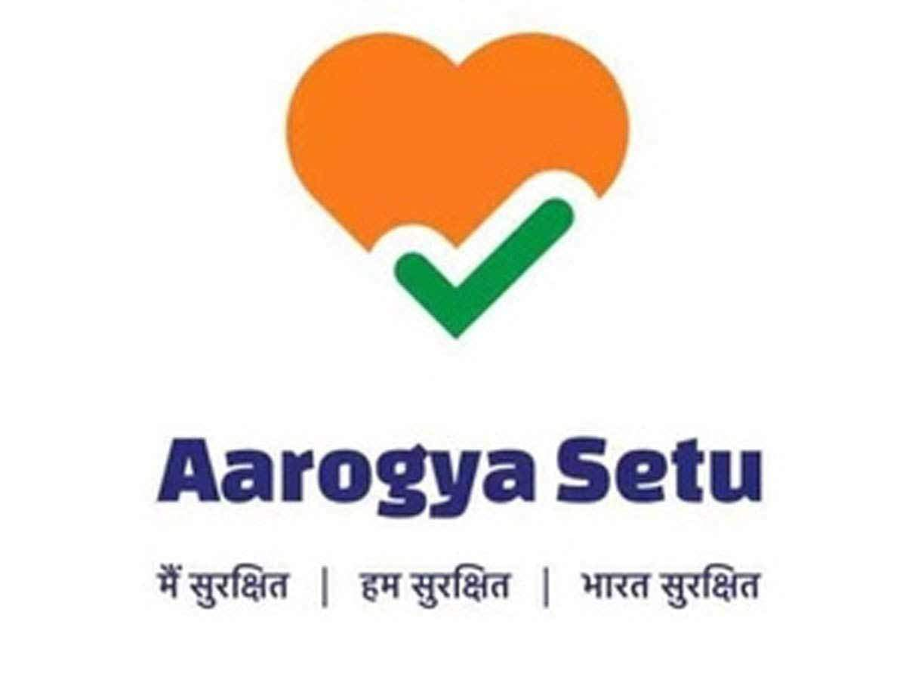
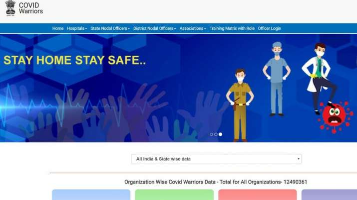

There are mainly two steps taken by the India government for the Fight against corona.
They are: 
1. Aarogya Setu App
Aarogya Setu is a location-based mobile app launched by the Government of India to connect health services and the people of India in the combined fight against COVID-19. The app has augmented GoI's initiatives in proactively reaching out to and informing the users the potential risk of infection, best practices and relevant medical advisories pertaining to the containment of COVID-19 pandemic. The app has been developed through Public Private Partnership under guidance of NIC.
The app serves a very critical purpose of contact tracing, that is helping the Government implement a graded plan for relaxation of the lockdown in areas across the 733 Districts of India. The app detects and tracks a user's movement with the help of GPS and Bluetooth sensors and notifies if the user is in the vicinity of infected people by using its database and algorithms. Going forward, the app may be used as an e-pass to move around the city if the users' app displays green colour with "you are safe" message on the screen. The app is privacy-first by design and currently available in 11 languages. The app has highly scalable architecture and is ready for pan-India roll out from Day 1. With Aarogya Setu, a step forward has been taken to protect ourselves and our family & loved ones.
2.Covid warriors website
COVID Warriors website serves the purpose of augmenting human resources and capacity building in India's crusade to save lives in the times of Novel Coronavirus (COVID-19). The website offers information about various resources available nationwide in the war against the COVID-19 contagion. This covers a detailed list of Hospitals (CPSEs Hospitals, ESIC Hospitals, Railway Hospitals, Defense Hospitals and Port Hospitals), Nodal Officers by States and Districts, Associations, and personnel which includes and is not limited to MBBS Doctors (& MBBS Students), Nurses, Dentists, Pharmacists, AYUSH personnel, ASHA Workers, NSS, NCC, Ex-Servicemen and others related to these disciplines. A detailed Training Matrix with Role is available outlining the training modules that can help prepare adequately by sensitizing about several topics ranging from the basics of COVID to Social Distancing to preventing infections with best practices and Personal Protective Equipment (PPE) to managing the Bio Medical Waste.
Citizens may also volunteer in the cause to serve according to their capabilities during the crisis, using the MyGov Platform. As Doctors and health workers diligently continue treating patients wholeheartedly amidst the outbreak of Corona in the country, the COVID Warriors website serves as a dashboard reflecting approximately 1.25 crore enlistments from Specialists, Medical Caretakers, NCC Cadets, and Common Society Associations. Technology is being optimally used to prepare the frontline warriors in this crusade with the help of a first of its kind iGOT e-learning Platform, launched by Department of Personnel & Training (DoPT)